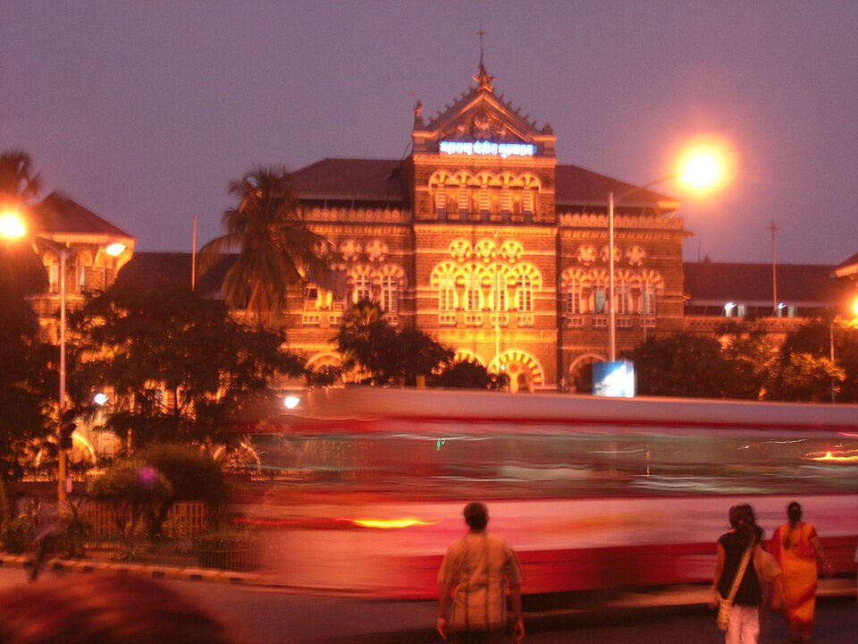
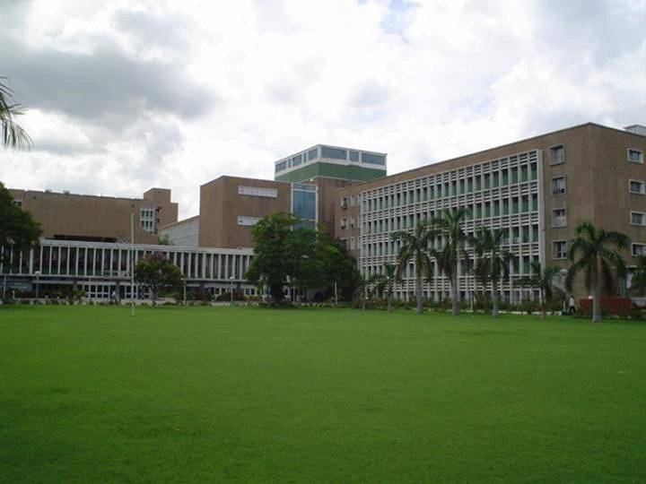
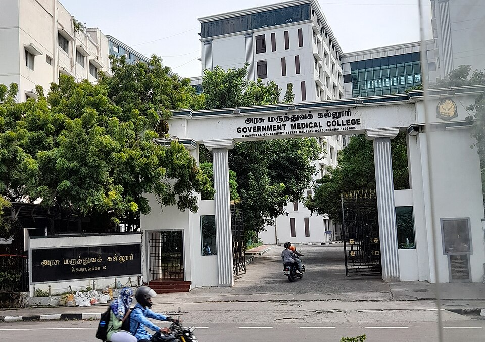

राष्ट्रीय
 राष्ट्रीय
राष्ट्रीयकांग्रेस दिसंबर में शुरू करेगी 'वोट चोरी' के खिलाफ राष्ट्रव्यापी अभियान
कांग्रेस पार्टी दिसंबर में भोपाल से 'वोट चोरी' के खिलाफ देशव्यापी आंदोलन शुरू करेगी। राहुल गांधी और प्रियंका गांधी वाड्रा इस अभियान का नेतृत्व करेंगे।
राष्ट्रीयतिरछिलापल्ली सड़क दुर्घटना: पीएम मोदी ने मृतकों के परिजनों के लिए ₹2 लाख मुआवजे की घोषणा की
प्रधानमंत्री नरेंद्र मोदी ने तमिलनाडु के तिरुचिरापल्ली जिले में हुई सड़क दुर्घटना में जान गंवाने वालों के प्रति संवेदना व्यक्त की है और प्रधानमंत्री राष्ट्रीय राहत कोष से आर्थिक सहायता की घोषणा की है।
 राष्ट्रीय
राष्ट्रीयप्रधानमंत्री नरेंद्र मोदी ने गुजरात के विकास का श्रेय भाजपा कार्यकर्ताओं को दिया
प्रधानमंत्री नरेंद्र मोदी ने वर्चुअल माध्यम से गुजरात भाजपा के दीवाली स्नेह मिलन कार्यक्रम को संबोधित करते हुए राज्य के विकास का श्रेय कार्यकर्ताओं को दिया और सार्वजनिक जीवन में अपने 25 साल पूरे होने को याद किया।
राष्ट्रीयएक दूजे के लिए फिल्म धुरंधर से बड़ी हिट थी: राकेश बेदी
गोवा में आयोजित 57वें अंतरराष्ट्रीय फिल्म महोत्सव में अभिनेता राकेश बेदी ने अपनी 1981 की फिल्म 'एक दूजे के लिए' को 'धुरंधर' से बड़ी हिट बताया और अपनी पुरानी फिल्मों की सफलता को याद किया।
राष्ट्रीयपुणे: चार मंजिला आवासीय इमारत की पार्किंग में लगी आग, 35 लोगों को सुरक्षित बचाया
पुणे के कोंढवा इलाके में रविवार तड़के एक चार मंजिला इमारत की पार्किंग में आग लगने से 18 वाहन जल गए। दमकल विभाग ने छत पर फंसे 35 लोगों को सुरक्षित बाहर निकाला।
राष्ट्रीयहैदराबाद में सुरक्षा बढ़ाई गई, मुंबई हमले की तर्ज पर धमकी भरा ईमेल मिला
मुंबई हमले की बरसी पर हैदराबाद में संभावित आतंकवादी हमले की धमकी मिलने के बाद पुलिस ने सुरक्षा कड़ी कर दी है। ईमेल में लश्कर-ए-तैयबा के सदस्य की मौत का बदला लेने की बात कही गई है।
राष्ट्रीयशशि थरूर बोले- पाकिस्तान पहले आतंकी ढांचा खत्म करे, तभी द्विपक्षीय वार्ता संभव
कांग्रेस सांसद शशि थरूर ने कहा है कि पाकिस्तान से बातचीत तभी संभव है जब वह आतंकवाद को रोके। साथ ही उन्होंने देश में रोजगार की स्थिति और कॉरपोरेट टैक्स कटौती के असर पर भी चिंता जताई।
राष्ट्रीयराहुल गांधी ने बीजेपी और आरएसएस पर साधा निशाना, धार्मिक परंपराओं की समझ न होने का लगाया आरोप
लोकसभा में विपक्ष के नेता राहुल गांधी ने बीजेपी और आरएसएस पर तीखा हमला बोला है। उन्होंने एलीफेंटा गुफाओं की अर्धनारीश्वर मूर्ति की तस्वीर शेयर करते हुए उन पर धार्मिक परंपराओं की समझ न होने का आरोप लगाया।
राष्ट्रीयरामायण में कुंभकर्ण के रोल के लिए फैसल मलिक को भूलनी पड़ी पारंपरिक एक्टिंग
रणबीर कपूर की फिल्म 'रामायण' में कुंभकर्ण का किरदार निभा रहे अभिनेता फैसल मलिक ने बताया कि इस वीएफएक्स-आधारित फिल्म के लिए उन्हें अपनी पारंपरिक एक्टिंग शैली को छोड़ना पड़ा था।
राष्ट्रीयपंजाब के तरणतारण में बीएसएफ और पुलिस ने खेत से बरामद किए हथियार और हेरोइन
पंजाब के तरणतारण जिले में भारत-पाकिस्तान सीमा के पास एक खेत से ड्रोन के जरिए गिराई गई संदिग्ध खेप बरामद हुई है। बीएसएफ और पंजाब पुलिस की संयुक्त कार्रवाई में पिस्तौल, कारतूस और हेरोइन मिली है।
राष्ट्रीयमाता-पिता और दादी को खोने के बाद अफसर बनीं एकता आसवानी
माता-पिता और दादी के निधन के बाद कठिन परिस्थितियों का सामना कर सिविल सेवा परीक्षा पास करने वाली एकता आसवानी अपनी शादी की तस्वीरों को लेकर चर्चा में हैं।
राष्ट्रीयमध्य प्रदेश के बालाघाट में हत्या मामला, पिता-पुत्र समेत 5 गिरफ्तार
मध्य प्रदेश के बालाघाट जिले में 20 वर्षीय कॉलेज छात्र की हत्या के मामले में पुलिस ने पांच आरोपियों को गिरफ्तार किया है। प्रेम प्रसंग के चलते हत्या की साजिश रची गई थी।
राष्ट्रीयमहाराष्ट्र सूखे पर आनंदराज अंबेडकर का बयान, सरकार की जल नीति पर उठाए सवाल
रिपब्लिकन सेना प्रमुख आनंदराज अंबेडकर ने महाराष्ट्र में सूखे को लेकर राज्य सरकार की जल संरक्षण नीति पर सवाल उठाए हैं। उन्होंने जालना में एक कार्यक्रम के दौरान सरकार के काम करने के तरीके की आलोचना की।
राष्ट्रीयपश्चिम बंगाल: बीजेपी विधायक रेखा पात्रा की हालत गंभीर, वेंटिलेटर पर
पश्चिम बंगाल से बीजेपी विधायक रेखा पात्रा की तबीयत अचानक बिगड़ने के बाद उन्हें कोलकाता के एक निजी अस्पताल में वेंटिलेटर पर रखा गया है। मेडिकल रिपोर्ट में शरीर में कीटनाशक के अंश मिलने की बात सामने आई है।
राष्ट्रीयमहाराष्ट्र का आदिवासी गांव गुर्हालपानी बना 'डॉक्टरों का गांव', 10 साल में दिए 11 डॉक्टर
महाराष्ट्र और मध्य प्रदेश की सीमा पर सतपुड़ा के पहाड़ों के बीच स्थित आदिवासी गांव गुर्हालपानी ने पिछले दस साल में 11 युवा डॉक्टर दिए हैं, जिससे यह गांव एक नई मिसाल बन गया है।
राष्ट्रीयगोंडा में चरित्र शक के चलते पत्नी की कुल्हाड़ी से हत्या, आरोपी पति गिरफ्तार
उत्तर प्रदेश के गोंडा में चरित्र पर शक के चलते एक व्यक्ति ने अपनी पत्नी की कुल्हाड़ी से वार कर हत्या कर दी। बेटे की सूचना पर पुलिस ने आरोपी को गिरफ्तार कर लिया है।
राष्ट्रीयशशि थरूर ने खेला GTA-6, नोटबंदी की तुलना को लेकर केंद्र सरकार पर साधा निशाना
कांग्रेस सांसद शशि थरूर ने लोकप्रिय वीडियो गेम GTA-6 खेलते हुए केंद्र सरकार पर निशाना साधा। उन्होंने नोटबंदी की तुलना करते हुए देश में अभिव्यक्ति की आजादी पर सवाल उठाए।
राष्ट्रीयतमिलनाडु और केरल में भारी बारिश का अनुमान, उत्तर भारत में कोहरे की चेतावनी
मौसम विभाग ने तमिलनाडु और केरल में भारी बारिश का अनुमान जताया है। इसके साथ ही उत्तर भारत के कई राज्यों में घने कोहरे और पूर्वोत्तर में बारिश की चेतावनी जारी की गई है।
राष्ट्रीयपूर्व क्रिकेटर सुरेश रैना का दिल्ली स्थित आलीशान घर, देखें तस्वीरें
पूर्व भारतीय क्रिकेटर सुरेश रैना ने अपने दिल्ली स्थित वसंत कुंज बंगले का टूर कराया है। घर के एक हिस्से में उनके क्रिकेट करियर और 2011 विश्व कप जीत की यादें सजी हुई हैं।
राष्ट्रीयउत्तर प्रदेश टीजीटी भर्ती के आवेदन की अंतिम तारीख बढ़कर 28 नवंबर हुई
उत्तर प्रदेश शिक्षा सेवा चयन आयोग ने 17,735 टीजीटी पदों के लिए आवेदन की अंतिम तारीख 28 नवंबर 2026 तक बढ़ा दी है। हाईकोर्ट के आदेश के बाद यह फैसला लिया गया है।
राष्ट्रीयअजय देवगन की थ्रिलर फिल्म 'दृश्यम: द कंक्लूजन' ओटीटी पर रिलीज के लिए तैयार
सिनेमाघरों में सफल प्रदर्शन के बाद अजय देवगन की फिल्म 'दृश्यम: द कंक्लूजन' इस हफ्ते ओटीटी पर स्ट्रीम होने जा रही है। दर्शक इसे घर बैठे ऑनलाइन देख सकेंगे।
 राष्ट्रीय
राष्ट्रीयबिहार में नीतीश सेतु के उद्घाटन के बाद पोस्टर फाड़े जाने पर राजनीतिक विवाद
बिहार में नीतीश सेतु के उद्घाटन के बाद प्रचार सामग्री फाड़े जाने का वीडियो सामने आने के बाद जेडीयू, बीजेपी और आरजेडी के बीच सियासी टकराव शुरू हो गया है।
 राष्ट्रीय
राष्ट्रीयराहुल गांधी ने एलीफेंटा गुफाओं की अर्धनारीश्वर मूर्ति शेयर कर भाजपा पर साधा निशाना
कांग्रेस नेता राहुल गांधी ने 1500 साल पुरानी अर्धनारीश्वर मूर्ति की तस्वीर शेयर करते हुए भाजपा और आरएसएस पर भारतीय परंपराओं को न समझने का आरोप लगाया है।
राष्ट्रीयराहुल गांधी ने BJP-RSS पर साधा निशाना, असम के मुख्यमंत्री हिमंत सरमा ने किया पलटवार
कांग्रेस नेता राहुल गांधी ने BJP और RSS पर भारतीय संस्कृति को न समझने का आरोप लगाया। इसके जवाब में असम के मुख्यमंत्री हिमंत बिस्व सरमा ने इसे अहंकार करार दिया है।
राष्ट्रीयतेलंगाना कांग्रेस में कलह तेज, सीएम रेवंत रेड्डी के बयान पर पार्टी विधायक की आपत्ति
तेलंगाना के मुख्यमंत्री रेवंत रेड्डी के 'पागल कुत्ते' वाले विवादित बयान पर पार्टी के भीतर ही घमासान मच गया है। कांग्रेस विधायक कोमातीरेड्डी राज गोपाल रेड्डी ने इस टिप्पणी पर कड़ी आपत्ति जताई है।
राष्ट्रीयअखिलेश यादव ने पिता मुलायम सिंह यादव को उनकी जयंती पर किया याद
समाजवादी पार्टी के राष्ट्रीय अध्यक्ष अखिलेश यादव ने अपने पिता और पार्टी संस्थापक मुलायम सिंह यादव की जयंती पर उन्हें श्रद्धांजलि दी और उनके बताए मूल्यों को याद किया।
 राष्ट्रीय
राष्ट्रीयतिरुपति बालाजी मंदिर में साल में सिर्फ एक बार क्यों निकलती है उग्र श्रीनिवास की सवारी?
आंध्र प्रदेश के तिरुमाला स्थित तिरुपति बालाजी मंदिर में भगवान उग्र श्रीनिवास की शोभायात्रा साल में केवल एक बार कैशिका द्वादशी के दिन सूर्योदय से पहले निकाली जाती है, जिसके पीछे सदियों पुरानी पौराणिक मान्यता जुड़ी है.
राष्ट्रीयधनुष और दुलकर सलमान की फिल्मों का बॉक्स ऑफिस पर मुकाबला
सिनेमाघरों में रिलीज हुई धनुष की 'OM: ऑपरेशन मोल' और दुलकर सलमान की 'आकाशमलो ओका तारा' का बॉक्स ऑफिस पर संघर्ष जारी है, जिसमें पहले वीकेंड के दौरान धनुष की फिल्म ने बढ़त बनाई है।
राष्ट्रीयअमित शाह बोले- चीन सीमा से लगे 40 गांवों में बढ़ी आबादी, पलायन थमा
केंद्रीय गृह मंत्री अमित शाह ने कहा कि केंद्र सरकार की नीतियों और सुविधाओं के चलते चीन सीमा से लगे अरुणाचल प्रदेश के 40 गांवों में पलायन रुका है और आबादी बढ़ी है।
राष्ट्रीयउत्तर प्रदेश विधानसभा चुनाव: सपा और कांग्रेस के बीच सीट शेयरिंग पर दिल्ली में बैठक
उत्तर प्रदेश विधानसभा चुनाव से पहले समाजवादी पार्टी और कांग्रेस के बीच सीट शेयरिंग को लेकर दिल्ली में तीन दिवसीय बैठक शुरू होने जा रही है। बैठक में उम्मीदवारों के चयन का मुख्य आधार विनेबिलिटी होगा।
राष्ट्रीयदिल्ली से अगवा आठ महीने का बच्चा उत्तर प्रदेश से बरामद, दंपती समेत तीन गिरफ्तार
दिल्ली के पांडव नगर से शनिवार को अगवा किए गए आठ महीने के बच्चे को पुलिस ने उत्तर प्रदेश के अलीगढ़ से सकुशल बरामद कर लिया है। पुलिस ने एक दंपती समेत तीन आरोपियों को गिरफ्तार किया है।
राष्ट्रीयकार्तिक आर्यन ने अपने 35वें जन्मदिन पर की प्रोडक्शन हाउस की शुरुआत
अभिनेता कार्तिक आर्यन ने अपने 35वें जन्मदिन पर नए प्रोडक्शन हाउस डोपामाइन स्टूडियोज का ऐलान किया। साथ ही उन्होंने करण जौहर के साथ अपनी पहली मॉन्स्टर थ्रिलर फिल्म 'कालिया' की घोषणा की है।
 राष्ट्रीय
राष्ट्रीयऔराया जिला: भौगोलिक स्थिति, औद्योगिक पहचान और राजनीतिक समीकरण की पूरी कहानी
उत्तर प्रदेश का औरैया जिला अपनी धार्मिक विरासत, कृषि और औद्योगिक प्रतिष्ठानों के साथ खास राजनीतिक समीकरण के लिए जाना जाता है। जिले की तीन विधानसभा सीटों में सपा और भाजपा का कब्जा है।
राष्ट्रीयअशोकनगर में पुलिस की छापेमारी, 60 टंकियों में कच्ची शराब और लाहन जब्त
मध्य प्रदेश के अशोकनगर जिले में पुलिस ने अवैध शराब के अड्डों पर छापा मारकर 60 टंकियों में भरी कच्ची शराब और 20,000 लीटर लाहन बरामद किया है।
 राष्ट्रीय
राष्ट्रीयआजम खां की जेल से वापसी से पश्चिमी उत्तर प्रदेश की राजनीति में बदलेंगे समीकरण
सपा नेता आजम खां की सक्रियता से पश्चिमी उत्तर प्रदेश में राजनीतिक समीकरण बदलने की उम्मीद है। टिकट बंटवारे से लेकर संगठन और नए मुस्लिम चेहरों के बीच संतुलन बनाने की चुनौती सामने है।
 राष्ट्रीय
राष्ट्रीयग्लोबल पीस ऑनर्स के दौरान मंच पर पहुंचा आवारा कुत्ता, वीडियो वायरल
मुंबई में आयोजित ग्लोबल पीस ऑनर्स 2026 के दौरान अभिनेता विक्रांत मैसी के मंच पर संबोधन के वक्त एक आवारा कुत्ता पहुंच गया, जिसका वीडियो सोशल मीडिया पर वायरल हो रहा है।
राष्ट्रीयलखनऊ: राजनाथ सिंह बोले- डिग्री से नौकरी मिलेगी, पहचान ज्ञान से बनेगी
रक्षामंत्री राजनाथ सिंह ने लखनऊ में एक दीक्षांत समारोह के दौरान विद्यार्थियों को संबोधित करते हुए कहा कि डिग्री से नौकरी का अवसर मिलता है, लेकिन असली पहचान ज्ञान और आत्मविश्वास से बनती है।
राष्ट्रीयएनसीबी ने दिल्ली-कश्मीर ड्रग्स नेटवर्क का किया भंडाफोड़, पांच लाख गोलियां बरामद
नारकोटिक्स कंट्रोल ब्यूरो ने दिल्ली से कश्मीर तक फैला नशे का अंतरराज्यीय नेटवर्क पकड़ा है। संयुक्त अभियान में चार आरोपी गिरफ्तार हुए हैं और पांच लाख से अधिक नशीली गोलियां व कफ सिरप बरामद किए गए हैं।
 राष्ट्रीय
राष्ट्रीययूपी चुनाव: सीट शेयरिंग को लेकर कांग्रेस और समाजवादी पार्टी की संयुक्त बैठक कल
उत्तर प्रदेश विधानसभा चुनाव 2027 के लिए सीट बंटवारे पर चर्चा करने हेतु कांग्रेस और समाजवादी पार्टी सोमवार को एक संयुक्त बैठक करेंगी।
राष्ट्रीयतेलंगाना: फिल्म पाइरेसी नेटवर्क का भंडाफोड़, दो छात्र गिरफ्तार
तेलंगाना साइबर सिक्योरिटी ब्यूरो ने फिल्म पाइरेसी रैकेट का खुलासा कर आंध्र प्रदेश के दो छात्रों को गिरफ्तार किया है। आरोपी सिनेमाघरों में मोबाइल से फिल्में रिकॉर्ड कर वेबसाइट पर अपलोड करते थे।
राष्ट्रीयगुजरात के कच्छ में सड़क हादसे में उत्तराखंड के सात लोगों की मौत
गुजरात के कच्छ जिले में तेज रफ्तार ट्रक और कार की टक्कर में उत्तराखंड के कोटद्वार के तीन परिवारों के सात लोगों की मौत हो गई। सभी मृतक भुज घूमने गए थे और लौटते समय यह हादसा हुआ।

राष्ट्रीयमुंबई में अपराध रोकने के लिए फरवरी 2027 तक लगेंगे 5000 AI कैमरे
मुंबई पुलिस सुरक्षा व्यवस्था को मजबूत करने के लिए फरवरी 2027 तक 5,000 आर्टिफिशियल इंटेलिजेंस से लैस सीसीटीवी कैमरे लगाएगी, जो फेस रिकग्निशन और रियल-टाइम अलर्ट तकनीक से लैस होंगे।
राष्ट्रीयतमिलनाडु के तिरुचिरापल्ली में वैन पेड़ से टकराई, आठ लोगों की मौत
तमिलनाडु के तिरुचिरापल्ली में वैन के नीम के पेड़ से टकराने से आठ लोगों की मौत हो गई और कई घायल हो गए। प्रधानमंत्री नरेंद्र मोदी ने हादसे पर दुख जताते हुए मुआवजे का एलान किया है।
 राष्ट्रीय
राष्ट्रीयआठवें वेतन आयोग पर केंद्रीय कर्मचारियों की नजर, न्यूनतम वेतन और फिटमेंट फैक्टर पर टिकी मांगें
आठवें वेतन आयोग को लेकर केंद्रीय कर्मचारियों और पेंशनर्स की उम्मीदें बढ़ गई हैं। कर्मचारी संगठनों ने न्यूनतम बेसिक सैलरी, फिटमेंट फैक्टर और भत्तों में बढ़ोतरी की प्रमुख मांगें रखी हैं।
राष्ट्रीयसर्दियों में त्वचा की देखभाल के लिए कच्चे दूध का करें इस्तेमाल
सर्दियों में रूखी त्वचा से राहत पाने और प्राकृतिक निखार के लिए कच्चा दूध एक असरदार विकल्प माना जाता है। इसमें मौजूद पोषक तत्व त्वचा को हाइड्रेट रखते हैं।
राष्ट्रीयकोटा सड़क हादसे में एक ही परिवार के नौ लोगों की मौत, सात घायल
राजस्थान के कोटा जिले में खाटू श्याम के दर्शन कर लौट रहे एक परिवार की गाड़ी खड़े ट्रक से टकरा गई। हादसे में नौ लोगों की मौत हो गई और सात अन्य घायल हो गए हैं।
राष्ट्रीयसंभल में पुलिस मुठभेड़ के बाद दो लुटेरे गिरफ्तार, महिला का पर्स बरामद
उत्तर प्रदेश के संभल जिले में पुलिस मुठभेड़ के बाद महिला से पर्स लूटने वाले दो आरोपियों को गिरफ्तार किया गया है। जवाबी कार्रवाई में दोनों के पैर में गोली लगी, जिन्हें अस्पताल में भर्ती कराया गया है।
राष्ट्रीयगुजरात के कच्छ में सड़क हादसे में सेना के परिवारों के सात लोगों की मौत
गुजरात के कच्छ जिले में ट्रक और कार की टक्कर में तीन बच्चों और दो महिलाओं समेत सात लोगों की मौत हो गई। सभी मृतक उत्तराखंड के गढ़वाल के रहने वाले थे और भुज में तैनात सेना के जवानों के परिवार से थे।
 राष्ट्रीय
राष्ट्रीयदिल्ली में बढ़ने वाली है ठंड, अगले 48 घंटे में 10 डिग्री से नीचे जा सकता है पारा
राजधानी दिल्ली में वेस्टर्न डिस्टर्बेंस के असर से ठंड बढ़ने की संभावना है। मौसम विभाग के अनुसार अगले 48 घंटों में न्यूनतम तापमान 10 डिग्री सेल्सियस से नीचे जा सकता है और कोहरा भी परेशान कर सकता है।
राष्ट्रीयसहारनपुर में यूपी पुलिस ने ओवैसी को सुप्रीम कोर्ट का जज समझकर दी गार्ड ऑफ ऑनर, जांच के आदेश
उत्तर प्रदेश के सहारनपुर में पुलिस कर्मियों ने एआईएमआईएम प्रमुख असदुद्दीन ओवैसी को सुप्रीम कोर्ट का जज समझकर गलती से गार्ड ऑफ ऑनर दे दिया। वरिष्ठ अधिकारियों ने मामले की जांच के आदेश दिए हैं।
 राष्ट्रीय
राष्ट्रीयअहमदाबाद में दिलजीत दोसांझ ने संगीत पर पाबंदियों और दोहरे मानदंडों पर उठाए सवाल
पॉपुलर पंजाबी गायक दिलजीत दोसांझ ने अहमदाबाद के नरेंद्र मोदी स्टेडियम में अपने कॉन्सर्ट के दौरान गानों पर लगाई जा रही पाबंदियों और दोहरे रवैये पर खुलकर सवाल उठाए।
राष्ट्रीयमुंबई की रिहायशी इमारत में आग, दो बच्चों समेत आठ लोग बचाए गए
दक्षिण मुंबई की चार मंजिला इमारत में आग लगने से फंसे दो बच्चों समेत आठ लोगों को दमकलकर्मियों ने सुरक्षित बाहर निकाला। आग बुझाने के दौरान एक दमकल अधिकारी घायल हो गया।
 राष्ट्रीय
राष्ट्रीयचित्रकूट का राजनीतिक और धार्मिक इतिहास: जानिए इस तीर्थ क्षेत्र की पूरी कहानी
धार्मिक आस्था, प्राकृतिक सुंदरता और हस्तशिल्प के लिए प्रसिद्ध चित्रकूट लोकसभा चुनाव और राजनीतिक समीकरणों के लिहाज से भी अहम है।
राष्ट्रीयJEE Main 2027: जनवरी सत्र के लिए पंजीकरण आज होगा बंद, 13 लाख से अधिक आवेदन
एनटीए के अनुसार, जेईई मेन 2027 जनवरी सत्र के लिए पंजीकरण प्रक्रिया आज समाप्त हो जाएगी। परीक्षा का आयोजन 22 जनवरी से शुरू होगा और एडमिट कार्ड 13 जनवरी को जारी किए जाएंगे।
राष्ट्रीयदिल्ली की हवा में अब भी प्रदूषण बरकरार, औसत AQI 236 दर्ज
राजधानी दिल्ली में वायु गुणवत्ता का स्तर रविवार को भी 'खराब' श्रेणी में बना रहा। केंद्रीय प्रदूषण नियंत्रण बोर्ड के अनुसार, औसत वायु गुणवत्ता सूचकांक 236 दर्ज किया गया है।

राष्ट्रीयभाजपा राज्यसभा सांसद रामराव वडकुटे का दिल्ली के एम्स में निधन
दिल्ली के अखिल भारतीय आयुर्विज्ञान संस्थान (AIIMS) में इलाज के दौरान भाजपा के राज्यसभा सांसद रामराव वडकुटे का दिल का दौरा पड़ने से निधन हो गया।
राष्ट्रीयराजस्थान: चित्तौड़गढ़ में सड़क हादसे में नौ लोगों की मौत, खाटू श्याम से लौट रहा था परिवार
राजस्थान के चित्तौड़गढ़ में कोटा-उदयपुर हाईवे पर खड़े ट्रेलर से क्रूजर गाड़ी की टक्कर होने से नौ लोगों की मौत हो गई और कई घायल हो गए। सभी महाराष्ट्र के रहने वाले थे और खाटू श्याम मंदिर से दर्शन कर लौट रहे थे।
राष्ट्रीयपश्चिम बंगाल की भाजपा विधायक रेखा पात्रा अस्पताल में वेंटिलेटर सपोर्ट पर
पश्चिम बंगाल में भाजपा विधायक रेखा पात्रा की अचानक तबीयत बिगड़ने के बाद उन्हें कोलकाता के एक निजी अस्पताल में वेंटिलेटर सपोर्ट पर रखा गया है। परिवार ने फूड पॉइजनिंग की आशंका जताई है।
 राष्ट्रीय
राष्ट्रीयJEE Main 2027: सेशन 1 के लिए 13 लाख से अधिक आवेदन, 22 नवंबर तक मौका
जेईई मेन 2027 सेशन-1 के लिए 13.29 लाख से अधिक आवेदन मिल चुके हैं। बिना लेट फीस के रजिस्ट्रेशन की अंतिम तारीख 22 नवंबर है, जबकि लेट फीस के साथ 26 नवंबर तक आवेदन किया जा सकता है।
राष्ट्रीयहरियाणा के जींद में एलपीजी टैंकर में लगी भीषण आग, खाली कराना पड़ा इलाका
हरियाणा के जींद में रोहतक रोड पर एक एलपीजी गैस टैंकर में भीषण आग लग गई। हादसे से दहशत में आए ग्रामीण बच्चों के साथ गांव छोड़कर जाने लगे। दमकल की गाड़ियों ने कई घंटे की मशक्कत के बाद आग पर काबू पाया।
राष्ट्रीयउत्तर प्रदेश में घना कोहरा और झारखंड में बारिश की संभावना, तमिलनाडु के ऊटी में तापमान गिरा
देश के कई हिस्सों में मौसम में बदलाव देखा जा रहा है। उत्तर प्रदेश में कोहरे का असर है, झारखंड में तूफान अकवान से बारिश की आशंका है, जबकि तमिलनाडु के ऊटी में पारा 4.4 डिग्री सेल्सियस तक पहुंच गया है।
राष्ट्रीयपूर्व जजों के पैनल ने सीएम योगी से 1.27 करोड़ नाम कटने के सबूत मांगे
सुप्रीम कोर्ट और हाईकोर्ट के सेवानिवृत्त जजों के स्वतंत्र आयोग ने सीएम योगी आदित्यनाथ को पत्र लिखकर राज्य में 1.27 करोड़ हिंदुओं के नाम मतदाता सूची से हटाने संबंधी बयान के समर्थन में आंकड़े और दस्तावेज मांगे हैं।
 राष्ट्रीय
राष्ट्रीयदिल्ली में वीआईपी आवाजाही और धार्मिक जुलूस के चलते ट्रैफिक एडवाइजरी जारी
दिल्ली में वीआईपी आवाजाही और धार्मिक जुलूस के कारण सोमवार को यातायात प्रतिबंध और रूट डायवर्जन लागू रहेंगे। पुलिस ने यात्रियों को प्रभावित मार्गों से बचने की सलाह दी है।
राष्ट्रीयबरेली में साइबर ठगों ने डॉक्टर को बनाया डिजिटल अरेस्ट, लगाया डेढ़ करोड़ भेजने का आरोप
उत्तर प्रदेश के बरेली में साइबर ठगों ने एक मशहूर डॉक्टर को वीडियो कॉल के जरिए रात भर डिजिटल अरेस्ट रखा। ठगों ने खुद को एटीएस अधिकारी बताकर आतंकवादी संगठन को रकम भेजने का झूठा आरोप लगाया था।
राष्ट्रीयपीएम मोदी बोले- स्किल होने पर एआई नहीं छीन सकता रोजगार
प्रधानमंत्री नरेंद्र मोदी ने लखनऊ में कहा कि जिनके पास कौशल है, उनका रोजगार एआई नहीं छीन सकता। वहीं, क्रिकेटर युजवेंद्र चहल भाजपा में शामिल हुए और अमेरिकी राष्ट्रपति ट्रम्प ने भारत की विकास दर पर बयान दिया है।
राष्ट्रीयमणिपुर में जहरीली शराब पीने से 18 लोगों की मौत, एक हजार से अधिक अस्पताल में भर्ती
मणिपुर में जहरीली स्थानीय शराब पीने से मरने वालों की संख्या बढ़कर 18 हो गई है, जबकि एक हजार से अधिक लोगों का अस्पतालों में इलाज चल रहा है।
राष्ट्रीयराजस्थान: कोटा में ट्रक से टकराई क्रूजर, एक ही परिवार के 9 लोगों की मौत
कोटा-उदयपुर नेशनल हाईवे पर शनिवार देर रात एक तेज रफ्तार क्रूजर खड़े ट्रक से टकरा गई। हादसे में एक ही परिवार के 9 लोगों की मौत हो गई और 7 अन्य घायल हो गए।
राष्ट्रीयस्किल रखने वालों का काम AI नहीं छीन सकता: लखनऊ में बोले पीएम मोदी
प्रधानमंत्री नरेंद्र मोदी ने लखनऊ में कहा कि आर्टिफिशियल इंटेलिजेंस के दौर में भी स्किल रखने वालों की अहमियत कम नहीं होगी। उन्होंने भारत को वैश्विक स्किल कैपिटल बनाने पर जोर दिया।
 राष्ट्रीय
राष्ट्रीयस्किल रखने वालों का काम AI नहीं छीन सकता: लखनऊ में बोले पीएम मोदी
प्रधानमंत्री नरेंद्र मोदी ने लखनऊ में कहा कि आर्टिफिशियल इंटेलिजेंस के दौर में भी स्किल रखने वालों की आजीविका सुरक्षित है। उन्होंने भारत के 'स्किल कैपिटल' बनने की बात कही।
 राष्ट्रीय
राष्ट्रीयशेरशाह सूरी के ऐतिहासिक मकबरे की जर्जर हालत पर एनजीटी का स्वतः संज्ञान
राष्ट्रीय हरित अधिकरण ने बिहार के सासाराम स्थित शेरशाह सूरी के मकबरे की जर्जर होती संरचना और कृत्रिम झील में प्रदूषण पर स्वतः संज्ञान लिया है।
 राष्ट्रीय
राष्ट्रीयलद्दाख में 370 हटने के बाद पहली बार हुए निकाय चुनाव, रिकॉर्ड मतदान दर्ज
जम्मू-कश्मीर से अलग होकर केंद्र शासित प्रदेश बनने के बाद लद्दाख में शनिवार को पहली बार नगर निकाय और पंचायत चुनाव हुए। कड़ाके की ठंड और भौगोलिक चुनौतियों के बावजूद मतदाताओं ने उत्साहपूर्वक मतदान किया।
राष्ट्रीयराष्ट्रपति द्रौपदी मुर्मू 28 नवंबर को एझिमाला नेवल अकादमी की लेंगी परेड
राष्ट्रपति द्रौपदी मुर्मू 28 नवंबर को केरल के एझिमाला स्थित इंडियन नेवल अकादमी में पासिंग आउट परेड की समीक्षा करेंगी। इस समारोह में 400 से अधिक कैडेट्स भारतीय नौसेना में अधिकारी बनेंगे।
राष्ट्रीयआजम खान के बिरयानी वाले बयान से छिड़ी बहस, यूपी और हैदराबाद के स्वाद पर चर्चा
समाजवादी पार्टी नेता आजम खान के बयान के बाद यूपी और हैदराबाद की बिरयानी को लेकर बहस शुरू हो गई है। आजतक की टीम ने रामपुर के खानसामों और हैदराबाद के लोगों से इस पर बात की है।
राष्ट्रीयआजम खान के बिरयानी वाले बयान से यूपी की सियासत में छिड़ी बहस
समाजवादी पार्टी नेता आजम खान के बयान के बाद उत्तर प्रदेश की राजनीति में हैदराबादी बिरयानी और यूपी के खानपान को लेकर चर्चा शुरू हो गई है।
राष्ट्रीयपश्चिम बंगाल: कर्ज का झांसा देकर 15 महिलाओं के खातों से ₹40 लाख की साइबर ठगी
पश्चिम बंगाल के नदिया जिले में कर्ज दिलाने का लालच देकर 15 महिलाओं के बैंक खाते खुलवाए गए और उनके जरिए ₹40 लाख की साइबर ठगी को अंजाम दिया गया। दूसरे राज्य की पुलिस ने मामले में कार्रवाई की है।
राष्ट्रीययूपी एनकाउंटर में 35% अल्पसंख्यक आरोपी, ओवैसी ने सहारनपुर में किया दावा
AIMIM प्रमुख असदुद्दीन ओवैसी ने सहारनपुर में दावा किया कि उत्तर प्रदेश के एनकाउंटर में 35 फीसदी और 'हाफ एनकाउंटर' में 90 फीसदी अल्पसंख्यक आरोपी होते हैं। उन्होंने सरकार बनने पर जांच आयोग गठित करने का वादा किया।
 राष्ट्रीय
राष्ट्रीयउत्तर प्रदेश के सभी मतदान केंद्रों पर 22 नवंबर को विशेष मतदाता अभियान
उत्तर प्रदेश में मतदाता सूची में नाम जांचने और संशोधन के लिए 22 नवंबर को सभी बूथों पर विशेष अभियान चलाया जाएगा। मुख्य निर्वाचन अधिकारी कार्यालय ने इसकी तैयारी पूरी कर ली है।
राष्ट्रीयभोपाल में करोड़ों की ठगी और फर्जी लोन मामले में फरार दंपती गिरफ्तार
भोपाल में फर्जी दस्तावेजों के जरिए बैंकों से करोड़ों रुपये का लोन लेने के आरोपी पति-पत्नी को पुलिस ने गिरफ्तार किया है। दोनों एक साल से फरार थे और उनके खिलाफ वारंट जारी थे।
राष्ट्रीयपीएम मोदी ने की सराहना, कहा- देशवासियों ने कम सोना खरीदने की अपील पर दिया सकारात्मक साथ
प्रधानमंत्री नरेंद्र मोदी ने शनिवार को कहा कि देशवासियों ने कम सोना खरीदने की उनकी अपील पर सकारात्मक प्रतिक्रिया दी है। उन्होंने 1965 में लाल बहादुर शास्त्री की अपील का हवाला देते हुए देश के सहयेग की भावना को सराहा।
राष्ट्रीयपंजाब: एएसआई इकबाल सिंह हत्याकांड में दूसरा शूटर अमृतसर से गिरफ्तार
पंजाब पुलिस ने तरनतारन जिले में हुई एएसआई इकबाल सिंह की हत्या के मामले में दूसरे मुख्य शूटर को अमृतसर से गिरफ्तार कर लिया है। पुलिस इस मामले में अन्य सहयोगियों की तलाश कर रही है।
राष्ट्रीयसंगीतकार अनिरुद्ध और काव्या मारन के रिसेप्शन में शामिल हुए कई दिग्गज
संगीतकार अनिरुद्ध रविचंदर और काव्या मारन के विवाह समारोह के रिसेप्शन में रजनीकांत, कमल हासन और मुख्यमंत्री विजय सहित कई जानी-मानी हस्तियां शामिल हुईं।

राष्ट्रीयतमिलनाडु में आयुष मेडिकल पाठ्यक्रमों के लिए दाखिले का आखिरी दौर 22 नवंबर से
तमिलनाडु में आयुष मेडिकल पाठ्यक्रमों में खाली सीटों को भरने के लिए दाखिले का अंतिम दौर 22 नवंबर से शुरू होगा। यह निर्णय ऑनलाइन काउंसलिंग के पिछले चरणों के बाद लिया गया है।
राष्ट्रीयसर्दियों में लंच के लिए बनाएं सेहतमंद और स्वादिष्ट आंवला रायता
विटामिन-सी और फाइबर से भरपूर आंवले का चटपटा रायता सर्दियों में दोपहर के खाने का स्वाद बढ़ाने के साथ सेहत के लिए भी बहुत फायदेमंद है।
राष्ट्रीयभारतीय क्रिकेटर युजवेंद्र चहल भाजपा में शामिल, ओबीसी मोर्चा में मिली अहम जिम्मेदारी
भारतीय लेग स्पिनर युजवेंद्र चहल भारतीय जनता पार्टी में शामिल हो गए हैं। पार्टी ने उन्हें ओबीसी मोर्चा की राष्ट्रीय कार्यसमिति में विशेष आमंत्रित सदस्य के रूप में नियुक्त किया है।
राष्ट्रीयदेव दीपावली 2026: जानिए सही तिथि, दीपदान का शुभ मुहूर्त और इसका धार्मिक महत्व
कार्तिक मास की पूर्णिमा तिथि को मनाई जाने वाली देव दीपावली का हिंदू धर्म में विशेष महत्व है। धार्मिक मान्यताओं के अनुसार, इस दिन देवतागण स्वर्ग से पृथ्वी पर आकर गंगा तट पर दीप जलाते हैं।
राष्ट्रीयकाव्या मारन और अनिरुद्ध के चेन्नई रिसेप्शन में पहुंचे कई वीवीआईपी, पीएम मोदी ने दी बधाई
संगीतकार अनिरुद्ध रविचंदर और बिजनेसवुमन काव्या मारन के चेन्नई रिसेप्शन में रजनीकांत और कमल हासन समेत कई दिग्गज शामिल हुए। प्रधानमंत्री नरेंद्र मोदी ने पत्र भेजकर जोड़े को बधाई दी।
राष्ट्रीयभारतीय क्रिकेटर युजवेंद्र चहल भाजपा में शामिल, ओबीसी मोर्चा में मिली जिम्मेदारी
भारतीय क्रिकेटर युजवेंद्र चहल शनिवार को भारतीय जनता पार्टी में शामिल हो गए। पार्टी ने उन्हें राष्ट्रीय ओबीसी मोर्चा की कार्यकारिणी में विशेष आमंत्रित सदस्य बनाया है।
राष्ट्रीयक्रिकेटर युजवेंद्र चहल भारतीय जनता पार्टी में हुए शामिल
भारतीय क्रिकेटर युजवेंद्र चहल शनिवार को आधिकारिक तौर पर भाजपा में शामिल हो गए। पार्टी ने उन्हें राष्ट्रीय ओबीसी मोर्चा की नई कार्यकारिणी में 'स्पेशल इनवाइटी' बनाया है।
राष्ट्रीयपठानकोट कार लूट मामला: पंजाब पुलिस ने चारों आरोपियों को किया गिरफ्तार
पंजाब के पठानकोट में हाईवे के पास बंदूक की नोक पर XUV500 लूटने वाले चारों आरोपियों को पुलिस ने गिरफ्तार कर लिया है। मास्टरमाइंड को गुजरात से पकड़ा गया है और लूटी गई गाड़ी भी बरामद कर ली गई है।
राष्ट्रीयपरिसीमन नोटबंदी से भी बड़ी आपदा साबित होगा, शशि थरूर ने दी चेतावनी
कांग्रेस नेता शशि थरूर ने परिसीमन को लेकर केंद्र सरकार पर निशाना साधा है। उन्होंने कहा कि यह नोटबंदी से भी बड़ी आपदा साबित होगी और इसके असर लंबे समय तक रहेंगे।
 राष्ट्रीय
राष्ट्रीयसुप्रीम कोर्ट का दिल्ली-एनसीआर में पटाखों पर बदलता रहा है रुख
सुप्रीम कोर्ट ने दिल्ली-एनसीआर में दिवाली पर पूरी पाबंदी के बजाय ग्रीन क्रैकर्स की अनुमति दी, लेकिन पिछले एक दशक में अदालत के रुख में कई बार बदलाव देखे गए हैं।
राष्ट्रीयचेन्नई में हुआ अनिरुद्ध रविचंदर और काव्या मारन का वेडिंग रिसेप्शन, उपराष्ट्रपति हुए शामिल
म्यूजिक कंपोजर अनिरुद्ध रविचंदर और सनराइजर्स हैदराबाद की सह-मालिक काव्या मारन का चेन्नई में वेडिंग रिसेप्शन आयोजित हुआ। इस समारोह में उपराष्ट्रपति सी.पी. राधाकृष्णन, रजनीकांत और एम.के. स्टालिन समेत कई हस्तियां शामिल हुईं।
राष्ट्रीयउत्तर प्रदेश में सुधरा महिला सुरक्षा का माहौल, रात में भी लौट रहीं बेटियां: PM मोदी
प्रधानमंत्री नरेंद्र मोदी ने उत्तर प्रदेश में महिला सुरक्षा की स्थिति पर संतोष जताया है। उन्होंने कहा कि राज्य में अब बेटियां रात 11 बजे भी काम से सुरक्षित घर लौट रही हैं।
राष्ट्रीयउच्च पदों पर महिलाओं की मौजूदगी से लैंगिक समानता नहीं: जस्टिस नागरत्ना
सुप्रीम कोर्ट की जज जस्टिस बीवी नागरत्ना ने ऑक्सफोर्ड विश्वविद्यालय में एक व्याख्यान के दौरान कहा कि उच्च पदों पर कुछ महिलाओं की मौजूदगी से समाज में वास्तविक लैंगिक समानता साबित नहीं होती।
राष्ट्रीयसहारनपुर में सर्किट हाउस के दौरान एआईएमआईएम प्रमुख असदुद्दीन ओवैसी को मिला गार्ड ऑफ ऑनर
उत्तर प्रदेश के सहारनपुर में प्रोटोकॉल की चूक के कारण एआईएमआईएम प्रमुख असदुद्दीन ओवैसी को सुप्रीम कोर्ट के जज के लिए आरक्षित गार्ड ऑफ ऑनर दे दिया गया।
राष्ट्रीयउत्तर प्रदेश में बन रही है ब्रह्मोस मिसाइल, पीएम मोदी ने गिनाईं उपलब्धियां
प्रधानमंत्री नरेंद्र मोदी ने उत्तर प्रदेश में रक्षा और सेमीकंडक्टर विनिर्माण के बढ़ते दायरे की सराहना की। उन्होंने कहा कि ऑपरेशन सिंदूर में दुश्मन की नींद उड़ाने वाली ब्रह्मोस मिसाइल अब यूपी में ही तैयार हो रही है।
राष्ट्रीयपत्रकारिता से कॉकपिट तक: पायलट हना मोहसिन खान ने साझा किया सफर
आजतक मास्टरक्लास में कमर्शियल पायलट हना मोहसिन खान ने पत्रकारिता से एविएशन क्षेत्र तक पहुंचने का अपना सफर साझा किया और कॉकपिट की चुनौतियों पर बात की।
राष्ट्रीयमेरठ में दुकानदारों को सम्मोहित कर लूटने वाले ईरानी गैंग के पांच बदमाश गिरफ्तार
उत्तर प्रदेश के मेरठ पुलिस ने दुकानदारों को सम्मोहित कर लूटपाट करने वाले ईरानी गैंग के पांच बदमाशों को गिरफ्तार किया है। इनमें से चार आरोपियों पर 25-25 हजार रुपये का इनाम घोषित था।
राष्ट्रीयविश्व हिंदू परिषद ने फिल्म 'रामायण' के प्रदर्शन पर रोक लगाने की मांग की
विश्व हिंदू परिषद ने रणबीर कपूर की आने वाली फिल्म 'रामायण' पर आपत्ति जताई है। संगठन ने रावण के चित्रण और पारंपरिक कथा में बदलाव का आरोप लगाते हुए सेंसर सर्टिफिकेट रद्द करने की मांग की है।
राष्ट्रीयअमित शाह का सियांग प्रोजेक्ट पर आश्वासन, स्थानीय संस्कृति से समझौता नहीं होगा
केंद्रीय गृह मंत्री अमित शाह ने अरुणाचल प्रदेश में सियांग अपर मल्टीपर्पज प्रोजेक्ट को लेकर स्थानीय लोगों की चिंताओं पर चर्चा का भरोसा दिया है। उन्होंने कहा कि संस्कृति और धार्मिक मान्यताओं से समझौता किए बिना आगे बढ़ेंगे।